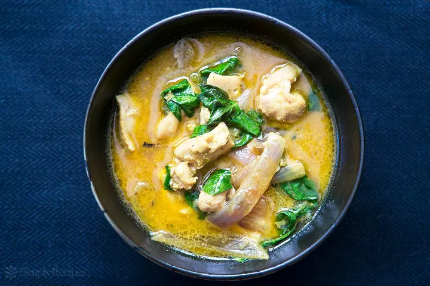

Basil Chicken Coconut Curry

Description
Curry can be cooked many ways. This recipe uses coconut milk base with chicken, onions, jalapenos, lime juice,
and fresh basil. Pairs well with white rice.
Ingredients
- 1 teaspoon salt
- 1/2 teaspoon ground coriander
- 1/2 teaspoon cumin
- Small pinch ground cloves
- 1/4 teaspoon cinnamon
- 1/4 teaspoon ground cardamom
- 1/2 teaspoon freshly ground black pepper
- 1/4 to 1/2 teaspoon cayenne, or more to taste
- 1/2 teaspoon turmeric
- 1 pound skinless, boneless chicken thighs, cut into 1 1/2-inch chunks
- 1 large onion, sliced root to tip
- 5 cloves garlic, minced
- 1 tablespoon finely chopped fresh ginger
- 1 to 2 jalapeño peppers, seeded and minced
- 2 tablespoons canola oil, rice bran oil or ghee
- 1 (14-ounce) can coconut milk
- 1 tablespoon lime juice, or to taste
- 12 to 20 fresh basil leaves, torn roughly
- Hot cooked rice, for serving
Steps
- In a small bowl, mix together the salt, ground coriander, cumin, ground cloves, cinnamon, ground cardamom,
black pepper, cayenne and turmeric. Set aside.
- In a saute pan, heat the oil on high heat. When oil begins to smoke, add onions and jalapenos and toss to
coat in oil. Sear for about 3 minutes stirring to prevent burning. Then, add ginger, garlic, and spice
mixture, toss to combine and cook for 1 minute.
- Add coconut milk and chicken. Stir to coat chicken in coconut milk. Bring to a simmer, reduce the heat,
cover and cook for 20 minutes.
- When chicken is tender, turn off the heat and add basil and lime juice. Add more lime juice and salt to
taste and serve over rice.
--Home Page--